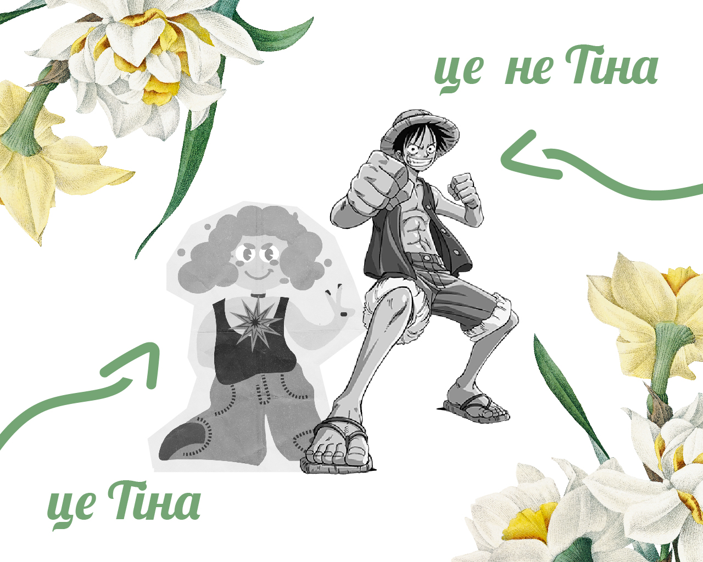
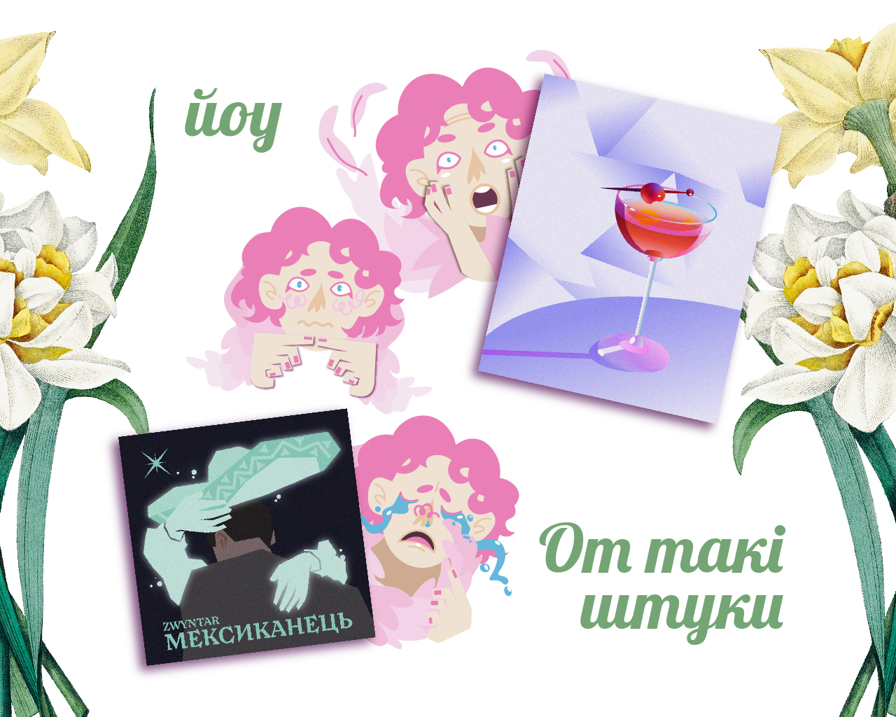

Я живу десь на краю світів, а точніше в селі Берестя що в 40ка хв від м. Чернівці
Часто через це важко додзвонитись мамі бо її телефон думає що вона кожні декілька годин випадково опиняється в Румунії. З цього можу зробити висновок що мама в мене мандрівниця. Яблунька від яблуні недалеко падає тому мене закотило аж у Львів.
В мене є інстаграм сторінка де я ділюся своїми фотографіями і дуже сподіваюсь що скоро там побачать і мою творчість
Люблю читати, ось декілька останніх мною прочитаних книг:
Зараз я в процесі перегляду аніме "Ван Піс" історія розгортається навколо гумового хлопця що мріє стати королем піратів.
На нього мене підсадила моя близька подруга Тіні Тіна тому я теж її сюди вставлю
В мене є декілька улюблених страв:
Ця їжа може розігнати найгустіші хмарки в небі, ось як це відчувається.
Недавно спробувала себе у векторній ілюстрації і мені дуже сподобалось, тому ось декілька моїх робіт за останній місяць
дякую за увагу